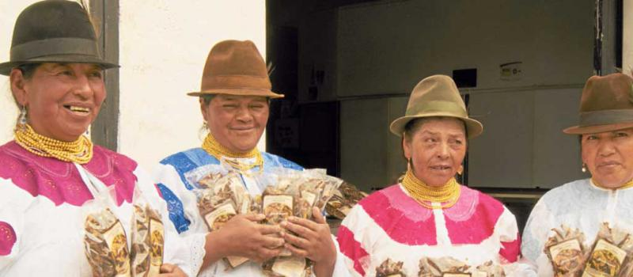

Los bosques de pino, que rodean a la comunidad de Pesillo, en el cantón Cayambe, en el norte de Pichincha, generan ingresos para 125 mujeres kichwas kayambi. En medio del suelo, tapizado por hojarascas, resaltan los hongos de la variedad Boletus luteus, que luego de un proceso de lavado y secado son comercializados en supermercados y tiendas del país. Todo empezó cuando Xavier Herrán, sacerdote salesiano, que visitaba la comunidad cada domingo para celebrar misa, motivó a las mujeres a recolectar estos hongos que crecen de manera silvestre a la sombra de las arboledas. El proyecto tendió sus raíces en 1988. Así recuerda Juana Andrango, de 59 años, una de las vecinas de la localidad, formada por dispersas viviendas de adobe y teja, protegidas por parcelas cubiertas por verdes cultivos. Al principio, explica Andrango, cuando aprendieron a pelar y disecar los hongos recolectaban pequeñas porciones de este suculento alimento apetecido por su alto valor gastronómico. “En la comunidad nadie sabía que los hongos son un producto que se podía comer o peor aún que podíamos vender”. Incluso, la campesina, que viste una falda y blusa bordada de color rosado, recuerda que el sacerdote fue el primer cliente. Ese fue el impulso para el nacimiento de la Asociación Artesanal Urcu Sisa (Flor de la Montaña, en español), que tiene personería jurídica desde 1992. Así, la explotación de los hongos del pinar se convirtió en una tarea alternativa a la agricultura, la principal actividad económica del poblado. Ahí se cultiva maíz, habas, papas, cebada, entre otros productos, destinados al autoconsumo y a la comercialización. Algunas familias también crían ganado vacuno para obtener leche y fabricar quesos artesanales. En los últimos ocho años, la organización se fortaleció con la ayuda de la Fundación Maquita, explica Rosa Erminia Catucuamba, líder de Urcu Sisa. La organización de economía social y solidaria canalizó recursos internacionales destinados a la construcción y equipamiento de la planta procesadora, que está ubicada en el centro del poblado. La ayuda también incluyó asesoramiento técnico en cosecha, poscosecha y comercialización, explica Patricio Vallejos, coordinador agrícola en Pichincha e Imbabura de Maquita. No conoce el monto de inversión. En la planta, que cuenta con bandejas de acero inoxidable, máquina secadora y un horno, 12 mujeres seleccionan, empacan y sellan fundas de 50 y 100 gramos. Su venta se realiza bajo la marca Hongos Secos Cayambe. Vallejos destaca que el producto es orgánico y que posee la respectiva certificación verde. Sin embargo, el técnico recuerda que hace dos años la agrupación enfrentó problemas en la cadena de comercialización. “Golpeamos varias puertas y ahora creció la demanda”. La Asociación Urcu Sisa procesa entre 150 y 200 kilos de hongos mensuales, en tiempo de mayor cosecha. Todo depende del clima, asegura Carmen Dolores Guatemal, tesorera de la organización. De noviembre a marzo, cuando hay más lluvias en el callejón interandino, crecen más hongos, indica. En verano, en cambio, la cosecha se reduce de a 50 a 80 kilos. Comuneras como Rosa Ulcuango conocen que los mejores días para la recolección de esta variedad son cuando no llueve. Cuando esta dama indígena, de 45 años, se interna en el bosque, siempre lo hace en compañía del último de sus cuatro hijos. Hamilton, de 12 años, aprendió a identificar este alimento que en la parte superior es similar a un sombrero de tono marrón. También, sabe como pelar la corteza y cortar, similar a los bastones de papas, la carne que es esponjosa y amarillenta. Tiene una textura consistente. Cada miércoles, las campesinas llegan cargadas con la cosecha, que previamente se seca al sol. Este último proceso demora de tres a cuatro días. La última semana, Ulcuango entregó 12 kilos. A cambio, cada productora recibe USD 7,50, por kilo. La tesorera Guatemal explica que el pago es de contado porque eso ayuda para dinamizar la economía de las familias del sector. Al ser un producto de recolección silvestre las campesinas también se encargan del cuidado de los bosques. Hay varias recetas para consumir estos hongos. Urcu Sisa sugiere la preparación en maíz tostado, cebiche, pizza, arroz, café, entre otros. Para este último se cocina los hongos, luego se licúa con el líquido, se añade agua necesaria antes de cocerlos con el arroz.

15
AGO
HONGOS SECOS PRIMAVERA
15
AGO
FACEBOOK
El video sobre la comunidad de Pesillo ofrece una ventana fascinante hacia este rincón único en Pichincha, Ecuador.